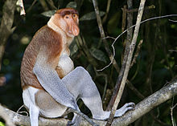

Feeding and Activities
As a seasonal folivore and frugivore, the proboscis monkey eats primarily fruit and leaves. It also eats flowers, seeds and insects to a lesser extent. At least 55 different plant species are consumed, "with a marked preference for Eugenia sp., Ganua motleyana and Lophopetalum javanicum". Young leaves are preferred over mature leaves and unripe fruits are preferred over ripe fruit. Being a seasonal eater, the proboscis monkey eats mostly fruit from January to May and mostly leaves from June to December. Groups usually sleep in adjacent trees. Monkeys tend to sleep near rivers, if they are nearby. Proboscis monkeys will start the day foraging and then rest further inland. Proboscis monkeys' daily activities consist of resting, traveling, feeding and keeping vigilant.
Conservation Status
>The proboscis monkey is assessed as endangered in the IUCN Red List of Threatened Species and listed in Appendix I of CITES. Its total population has decreased by more than 50% in the past 36 to 40 years to 2008 due to ongoing habitat loss because of logging and oil palm plantations, and hunting in some areas due to the species being treated as a delicacy, as well as its use in traditional Chinese medicine. The population is fragmented: the largest remaining populations are found in Kalimantan; there are far fewer in Sarawak, Brunei and Sabah. The proboscis monkey is protected by law in all regions of Borneo. In Malaysia, it is protected by a number of laws including the Wildlife Protection Act (federal law), the Wildlife Protection Ordinance 1998 (Chapter 26) and Wildlife Conservation Enactment 1997 (Sabah state law).
